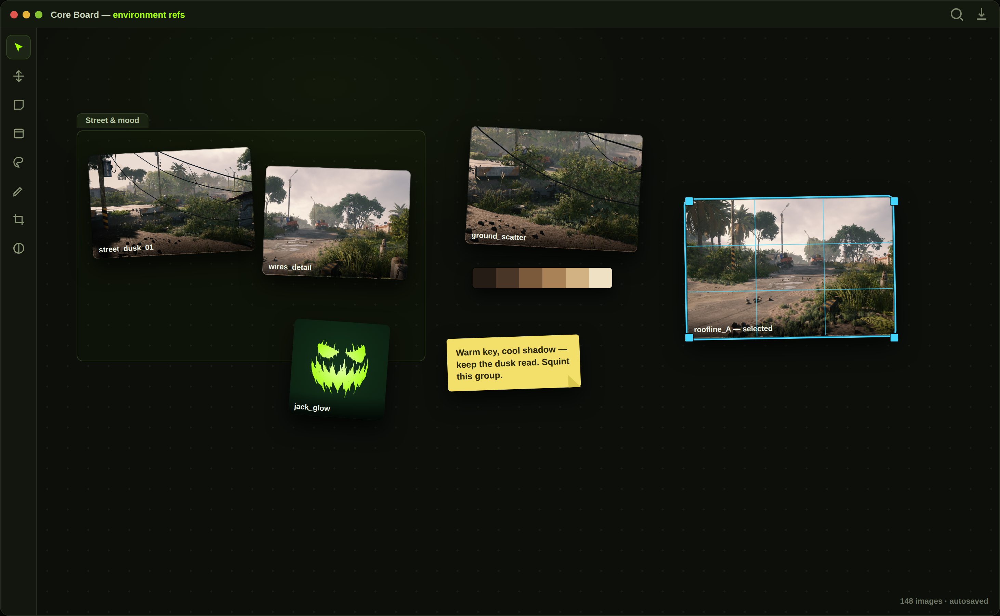
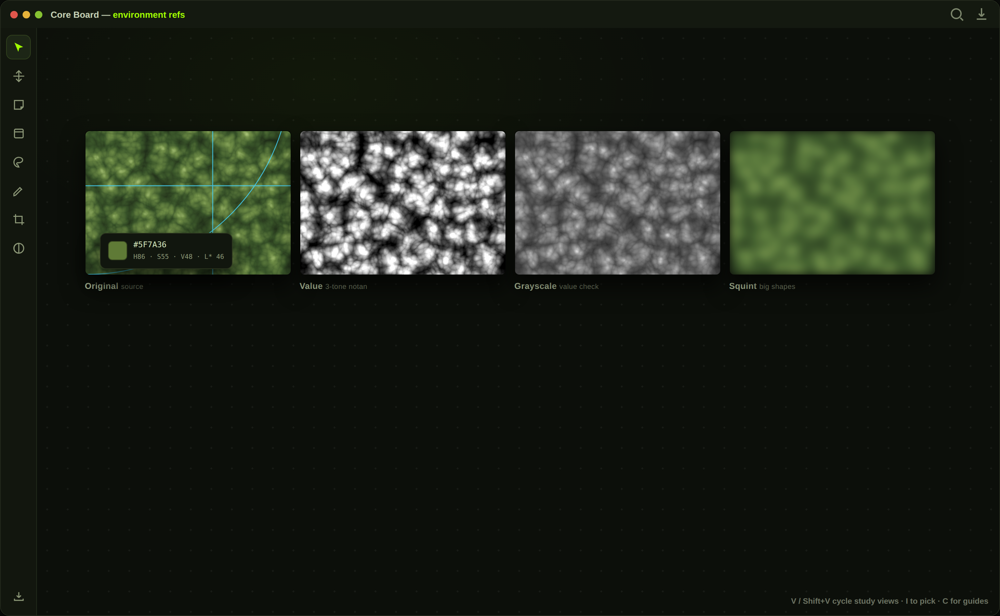
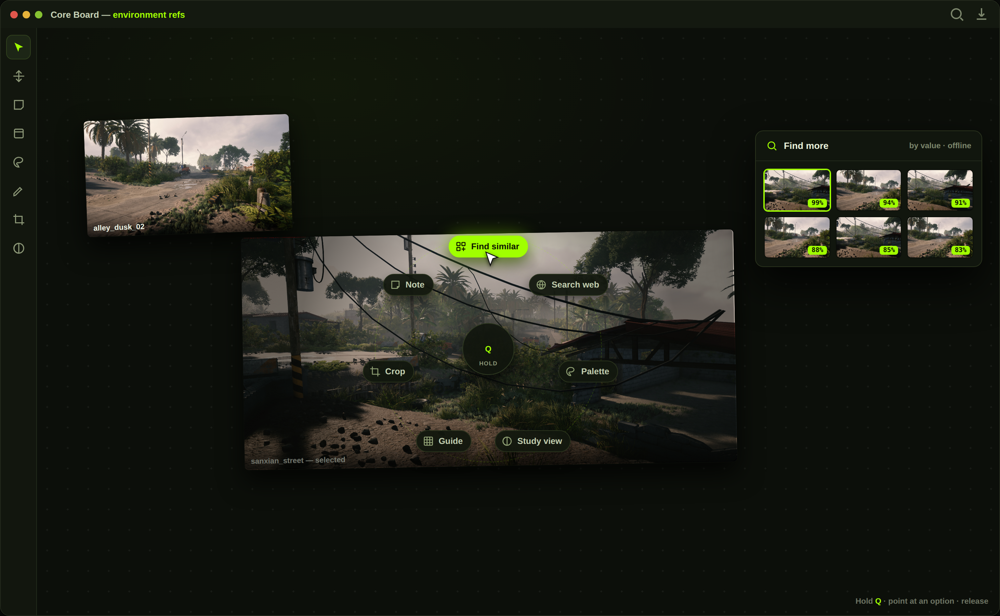

The reference board that stays out of your way.
Core Board is a small, fast desktop app for images. Drop references onto an infinite canvas, arrange and study them — and it all saves itself.
A calm canvas — with the study tools built in.
Arrange references on an infinite board, then flip any image into a value, grayscale or squint study without leaving the app.



Everything a reference board should, nothing it shouldn't.
An infinite canvas with the study tools painters and artists actually reach for — and it autosaves after every change.
Infinite canvas
Drag & drop or paste images, zoom and pan freely, move and resize — layout saves itself.
Study views
Notan value steps (3 or 5 tones), saturation and detail maps, squint and grayscale — per image.
Composition guides
Rule of thirds, phi grid, golden spiral, dynamic-symmetry diagonals and center cross, over any image.
Color & palettes
Eyedrop any pixel (hex, HSV, perceptual L*) and pull the 6–10 dominant colors under each image.
Watch a folder
Point a board at your render output or screenshots folder — new images appear on the board by themselves.
Tags, search & frames
Tag items, fuzzy-search to fade everything but matches, and wrap sections in titled frames with notes.
Export with watermark
Render a selection or the whole board to one full-quality PNG, with an optional watermark.
Overlay mode
Lower the window opacity and pin it always-on-top to trace or color-match against other apps.
Align & grid pack
Snapping guides, align/distribute tools, and one-key grid packing that scales a selection to one height.
Download and run.
Grab the Linux build, unpack it and launch — the first run creates a fresh board. No installer, no account.
Run it (Linux x86_64)
Unpack the .tar.gz and run the binary:
Needs a desktop with the usual windowing libraries (libxkbcommon-x11, a GL/Vulkan driver) and xdg-desktop-portal for the folder picker — any standard desktop already has these.
First steps
Once it's open:
- Drop images onto the canvas (or Ctrl+V to paste).
- Arrange — drag to move, corner handle to resize, scroll to zoom.
- Press Ctrl+O to create or switch boards, or watch a folder.
- Hit V for study views, P for a palette, H for the help overlay.
A shortcut for everything.
Start your board.
No account, no cloud, no subscription. Your boards are plain folders on your disk.